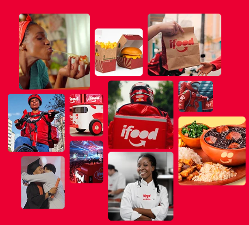

Comida é nossa
paixão. Tecnologia, o
nosso talento.
O iFood é uma empresa brasileira de tecnologia que
aproxima clientes, restaurantes e entregadores de
forma simples e prática. E, para proporcionar uma
experiência incrível para todo mundo, nossa
entrega vai muito além do delivery.
Saiba mais sobre o iFood
